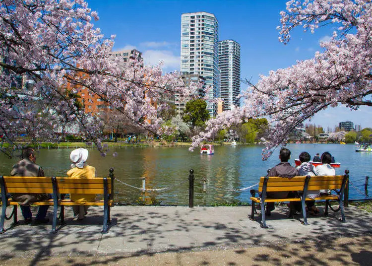
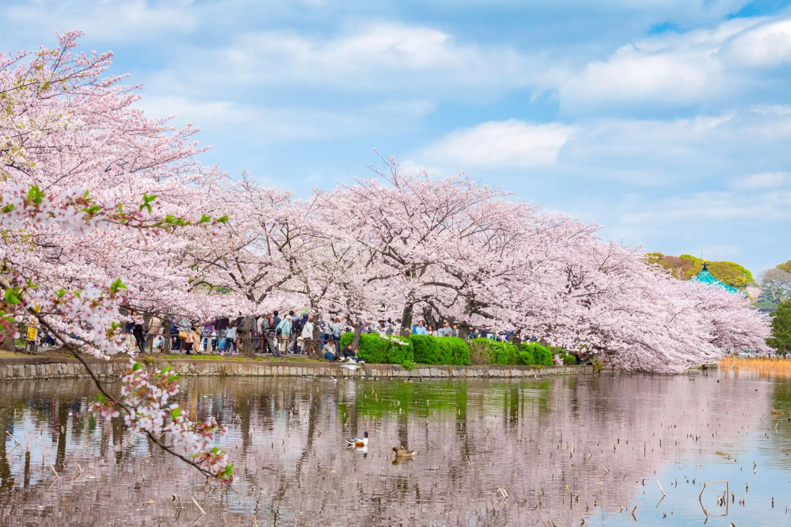
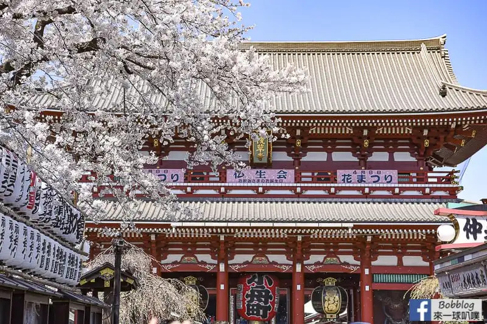
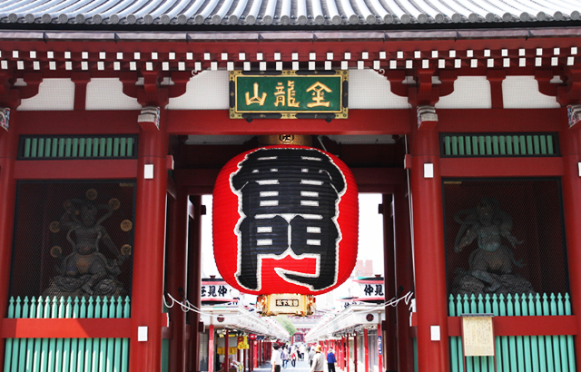
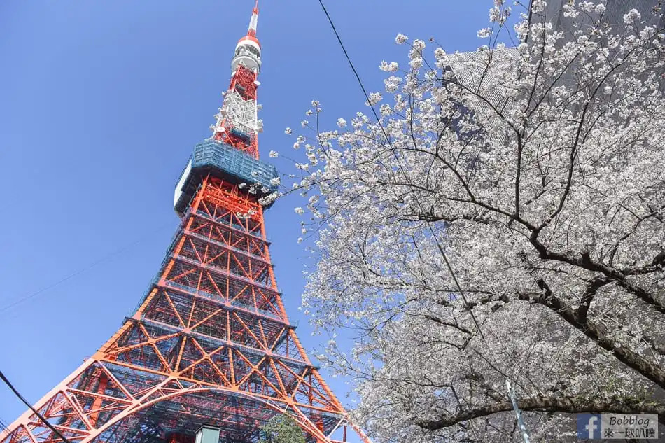
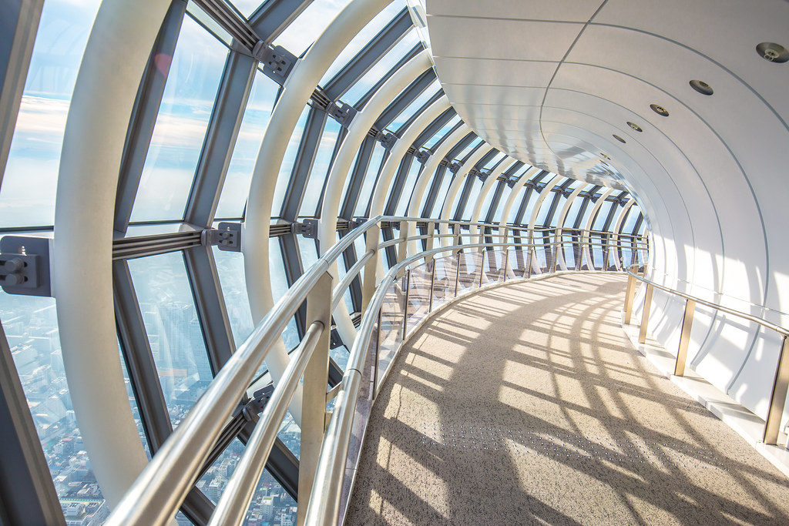

亞洲 | 日本 | 2024 5日東京賞櫻

航空交通
從香港前往東京的航班選擇十分多樣，每天有多班直飛航班， 主要由香港國際機場出發，飛行時間約為 4 至 5 小時。 旅客可選擇全服務航空公司，如國泰航空、日本航空、全日空， 享受舒適座位與完善餐飲服務；也能選擇廉價航空， 例如樂桃航空、捷星日本或香港快運，以更優惠的票價抵達東京。
票價依季節而異，淡季來回約 HK$2,500–4,500， 旺季如櫻花季或暑假則可能上漲至 HK$6,000 以上。 東京主要有兩個國際機場：成田國際機場與羽田機場， 其中羽田距離市中心更近，交通便利。無論是短途度假或長程旅遊， 香港出發的航班都能讓你輕鬆抵達東京，展開精彩旅程。
房間住宿
在東京旅行，住宿選擇相當豐富，從豪華酒店到平價旅館一應俱全。 若想體驗高端享受，可以選擇位於新宿、銀座或六本木的五星級酒店， 提供完善設施與便利交通。背包客則常選擇青年旅館或膠囊旅館， 不僅價格親民，還能結識來自世界各地的旅人。
對於家庭或長住旅客，Airbnb、公寓式酒店與商務旅館是理想選擇， 提供廚房與洗衣設備，生活更便利。熱門訂房平台如 Booking.com、Agoda、 Trip.com 及日本在地的 Jalan.net，都能找到各種房型與優惠。 住宿價格依地點與季節而異，淡季每晚約 ¥5,000–8,000， 旺季如櫻花季或暑假則可能翻倍。無論是追求舒適還是節省預算， 東京都能提供合適的住宿方案，讓旅程更加安心愉快。
歷史與文化
東京的歷史可追溯至江戶時代。1603 年德川家康在此建立幕府， 江戶逐漸成為日本的政治與經濟中心。到了 1868 年明治維新， 江戶改名為「東京」，意為「東方的京都」，並正式成為日本首都。 自此，東京在近代化的浪潮中迅速發展，融合了傳統與現代的多元面貌。
文化方面，東京既保留了古老的神社與寺廟，如淺草寺、明治神宮， 也孕育了現代潮流文化。原宿與澀谷是年輕人時尚的象徵， 秋葉原則是動漫與電玩迷的天堂。東京的美食文化同樣令人驚艷， 壽司、拉麵、居酒屋料理遍布街頭，並且擁有世界最多的米其林星級餐廳。
此外，東京的祭典活動展現了濃厚的在地風情。春天的賞櫻、夏季的煙火大會、 秋天的神社祭典與冬季的燈飾點亮城市，讓人感受到四季分明的文化魅力。 這座城市不僅是日本的政治與經濟核心，更是傳統與現代交織的文化舞台， 吸引全球旅人前來探索。
必訪景點
-
🌸 上野公園（賞櫻聖地）
三月的東京，櫻花如粉色雲海般在上野公園綻放。 人們鋪上野餐墊，舉杯暢談，笑聲與花香交織成春日的樂章。 沿著湖畔散步，櫻花花瓣隨風飄落，落在肩上， 彷彿在低語「歡迎來到東京的春天」。 除了櫻花，公園內還有博物館與動物園，讓自然與人文在此交融， 成為旅人心中最難忘的季節記憶。


-
🏯 淺草寺
走進淺草寺，雷門的大紅燈籠映入眼簾，彷彿在迎接每一位旅人。 穿過仲見世商店街，香氣四溢的和菓子、琳瑯滿目的紀念品讓人目不暇給。 寺院的莊嚴與熱鬧的街道形成鮮明對比，既能感受古老的信仰氛圍， 又能體驗江戶時代的繁華。春天櫻花盛開時，寺院周邊更添浪漫， 讓人忍不住駐足拍照。


-
🌃 東京鐵塔／晴空塔
夜幕低垂，東京鐵塔在燈光下閃耀，紅白相間的身影成為城市浪漫的象徵。 晴空塔則以 634 公尺的高度直插天際，登上觀景台，整個東京盡收眼底， 甚至能遠眺富士山。白天是現代建築的震撼，夜晚則是夢幻的光影秀， 兩座塔各自展現東京的不同面貌， 讓人一次擁有昭和懷舊與未來科技的雙重體驗。

